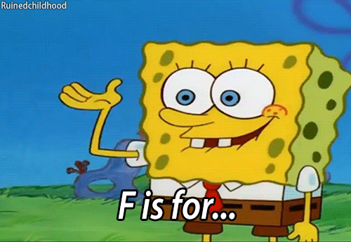

GIF Format

About This Image
This animated GIF shows a simple animation sequence that demonstrates the format's ability to display frame-by-frame animation.
File Type Information
GIF (Graphics Interchange Format) is a bitmap image format that supports up to 256 colors and allows for simple animations through frame sequencing. GIFs are widely used for simple animations, icons, and graphics with limited color needs.
Why I Chose This Image
I selected this particular animation because it clearly demonstrates the unique capability of GIFs to display simple animations in a compact file size. The limited color palette also showcases how GIFs can be optimized for web use.
Source
GIF by: Ayathma